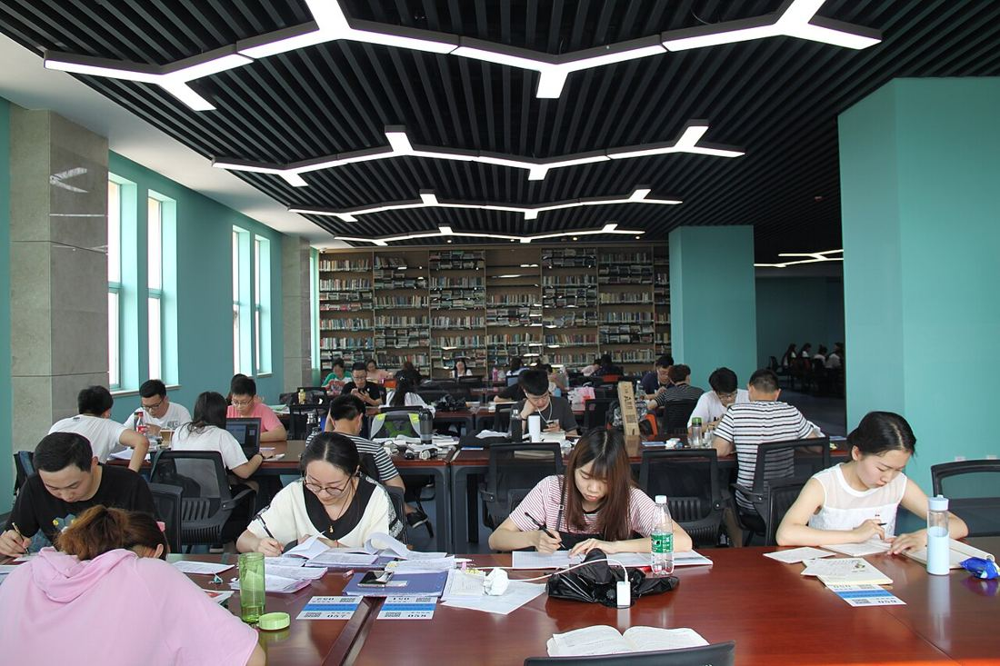
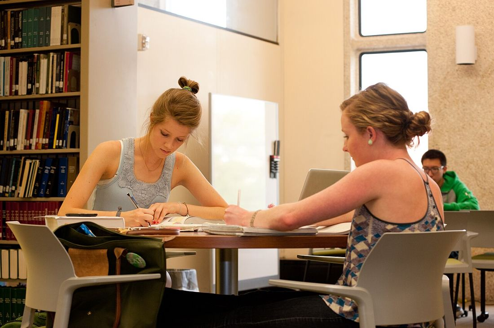
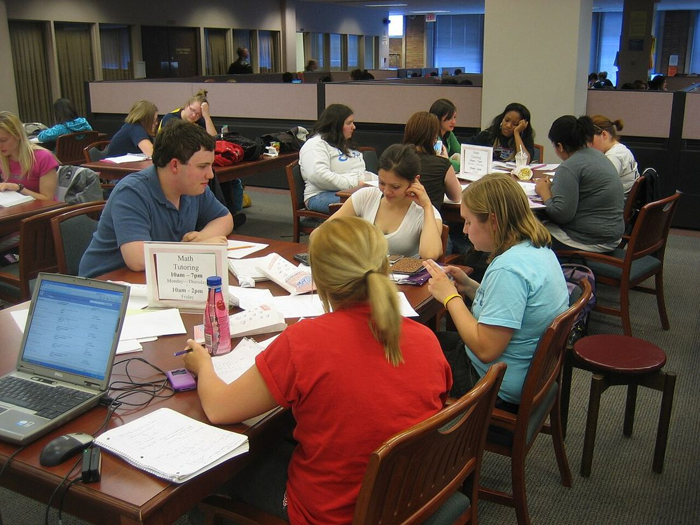

Antes de empezar
Para qué sirve una beca
Una beca paga parte de lo que cuesta estudiar: colegiatura, transporte, materiales o equipo. Así quedan más horas para la biblioteca y menos para un segundo empleo.



Fotos: Gary Todd (CC0), Tulane Public Relations (CC BY 2.0) y KSULib (CC BY 2.0), vía Wikimedia Commons.
Capítulo 1
Las becas
Filtra por quién la otorga. Cada ficha enlaza a la página oficial.
Capítulo 2
Comparación rápida
Las cuatro becas en una sola vista.
| Beca | Quién la da | Qué da | Requisito clave | ¿Me aplica? |
|---|
Capítulo 3
Mi plan para aplicar
En qué orden las voy a intentar y por qué.
Fuentes
Consultadas el 17 de noviembre de 2026. Los montos y requisitos cambian con cada convocatoria; revisa siempre la página oficial.